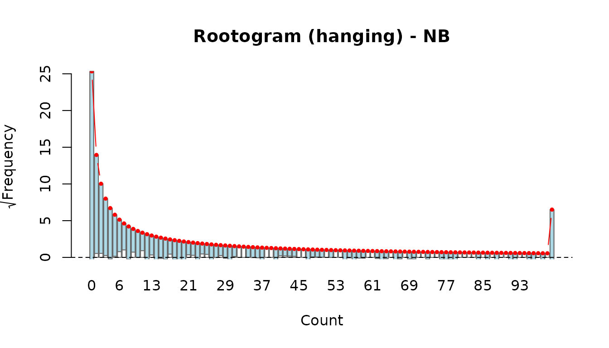
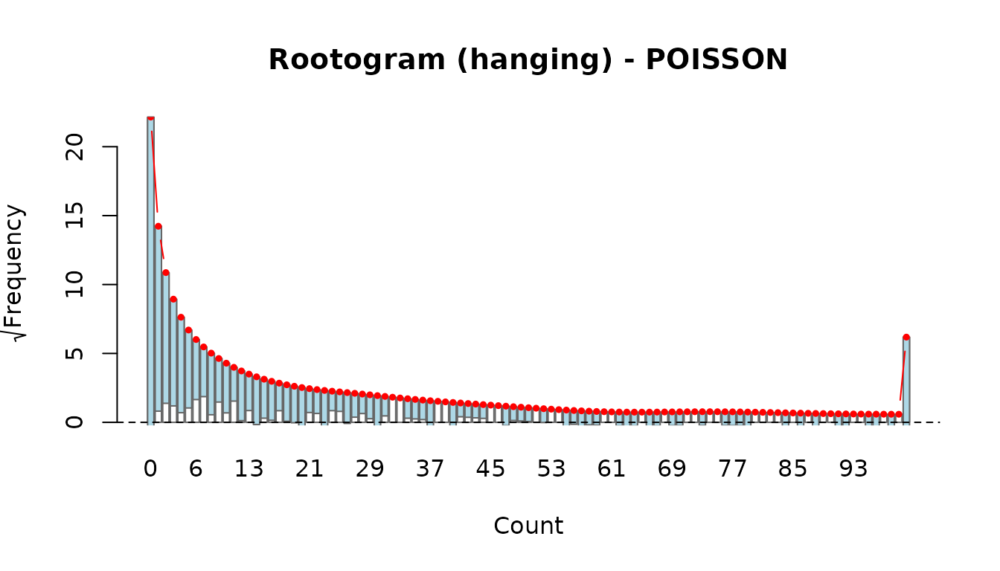
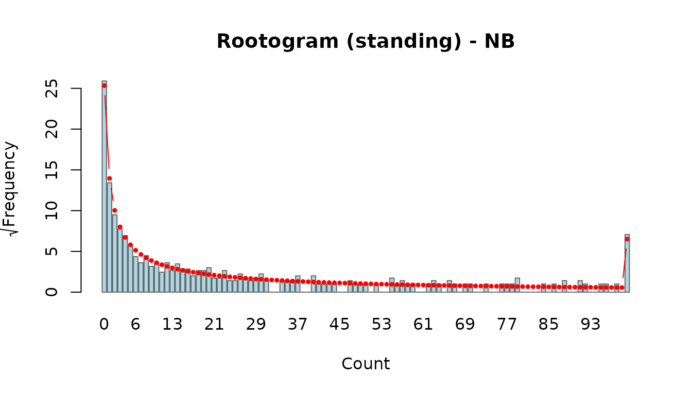
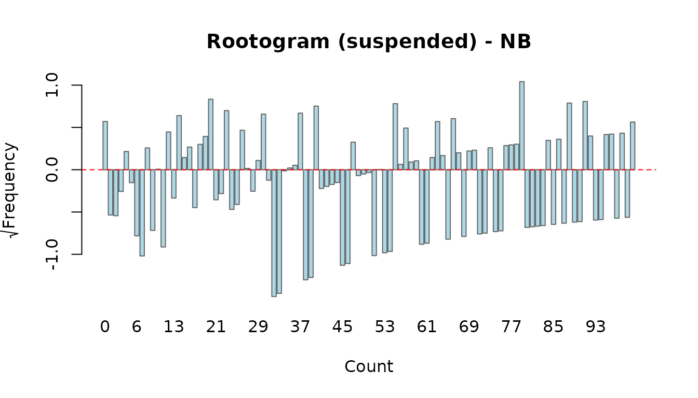
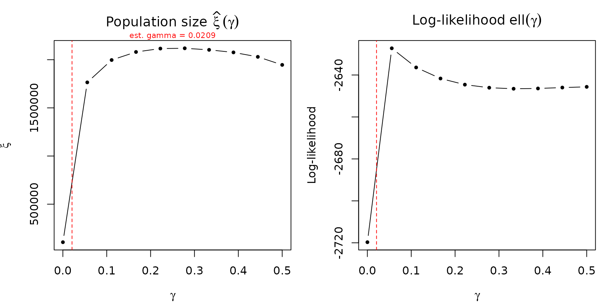

This vignette demonstrates the diagnostic and model-comparison tools available in the uncounted package. We cover goodness-of-fit statistics, residual analysis, rootograms, exploratory log-log plots, leave-one-out sensitivity analysis, and gamma profiling. Together these tools help you decide which model specification is most appropriate and whether the population-size estimates are robust.
1. Setup: fitting Poisson and Negative Binomial models
We use the irregular_migration dataset shipped with the
package. Two models are fitted—Poisson and Negative Binomial—with year
and sex covariates on alpha and year covariates on beta.
library(uncounted)
data(irregular_migration)
fit_po <- estimate_hidden_pop(
data = irregular_migration,
observed = ~ m, auxiliary = ~ n, reference_pop = ~ N,
method = "poisson",
cov_alpha = ~ factor(year) + sex, cov_beta = ~ factor(year),
countries = ~ country_code
)
fit_nb <- estimate_hidden_pop(
data = irregular_migration,
observed = ~ m, auxiliary = ~ n, reference_pop = ~ N,
method = "nb",
cov_alpha = ~ factor(year) + sex, cov_beta = ~ factor(year),
countries = ~ country_code
)Quick summaries:
summary(fit_po)
#> Unauthorized population estimation
#> Method: POISSON | vcov: HC3
#> N obs: 1382
#> Gamma: 0.007252 (estimated)
#> Log-likelihood: -8217.25
#> AIC: 16462.49 BIC: 16535.73
#> Deviance: 13831.69
#>
#> Coefficients:
#> Estimate Std. Error z value Pr(>|z|)
#> alpha:(Intercept) 0.7888791 0.0905306 8.7139 < 2.2e-16 ***
#> alpha:factor(year)2020 0.0012314 0.0961269 0.0128 0.9897790
#> alpha:factor(year)2021 -0.0174682 0.0874576 -0.1997 0.8416895
#> alpha:factor(year)2022 -0.0937655 0.1093999 -0.8571 0.3913953
#> alpha:factor(year)2023 -0.1136845 0.1773996 -0.6408 0.5216276
#> alpha:factor(year)2024 -0.1690606 0.1613972 -1.0475 0.2948776
#> alpha:sexMale 0.0420143 0.0458809 0.9157 0.3598104
#> beta:(Intercept) 0.6753695 0.1952751 3.4586 0.0005431 ***
#> beta:factor(year)2020 0.1888301 0.2277130 0.8292 0.4069653
#> beta:factor(year)2021 0.2330868 0.2128383 1.0951 0.2734572
#> beta:factor(year)2022 0.0884458 0.2489483 0.3553 0.7223815
#> beta:factor(year)2023 -0.0523686 0.3785430 -0.1383 0.8899697
#> beta:factor(year)2024 -0.3223205 0.3188461 -1.0109 0.3120658
#> ---
#> Signif. codes: 0 '***' 0.001 '**' 0.01 '*' 0.05 '.' 0.1 ' ' 1
#>
#> -----------------------
#> Population size estimation results:
#> (BC = bias-corrected using model-based variance)
#> Observed Estimate Estimate (BC) CI lower CI upper
#> year=2019, sex=Female 1,535 21,112 21,080 3,390 131,073
#> year=2019, sex=Male 5,069 60,028 59,945 10,174 353,186
#> year=2020, sex=Female 698 23,622 23,557 6,024 92,123
#> year=2020, sex=Male 2,700 66,697 66,506 22,946 192,757
#> year=2021, sex=Female 483 22,742 22,678 7,259 70,846
#> year=2021, sex=Male 2,622 65,018 64,825 32,315 130,038
#> year=2022, sex=Female 317 14,096 14,060 2,475 79,889
#> year=2022, sex=Male 2,632 32,870 32,792 7,361 146,085
#> year=2023, sex=Female 523 12,059 12,039 533 271,729
#> year=2023, sex=Male 3,839 28,829 28,785 1,219 679,659
#> year=2024, sex=Female 956 7,114 7,107 576 87,708
#> year=2024, sex=Male 5,731 17,484 17,470 1,175 259,664
summary(fit_nb)
#> Unauthorized population estimation
#> Method: NB | vcov: HC1
#> N obs: 1382
#> Gamma: 0.020904 (estimated)
#> Theta (NB dispersion): 1.3552
#> Log-likelihood: -2621.12
#> AIC: 5272.23 BIC: 5350.7
#> Deviance: 1275.92
#>
#> Coefficients:
#> Estimate Std. Error z value Pr(>|z|)
#> alpha:(Intercept) 0.815914 0.034303 23.7857 < 2.2e-16 ***
#> alpha:factor(year)2020 -0.041927 0.057026 -0.7352 0.4621983
#> alpha:factor(year)2021 0.075277 0.059615 1.2627 0.2066941
#> alpha:factor(year)2022 -0.030024 0.073404 -0.4090 0.6825276
#> alpha:factor(year)2023 0.015639 0.055928 0.2796 0.7797703
#> alpha:factor(year)2024 0.069526 0.047747 1.4561 0.1453546
#> alpha:sexMale 0.044271 0.013139 3.3694 0.0007533 ***
#> beta:(Intercept) 0.873448 0.092236 9.4697 < 2.2e-16 ***
#> beta:factor(year)2020 0.140570 0.116697 1.2046 0.2283686
#> beta:factor(year)2021 0.467967 0.121543 3.8502 0.0001180 ***
#> beta:factor(year)2022 0.185126 0.151512 1.2219 0.2217595
#> beta:factor(year)2023 0.184070 0.110452 1.6665 0.0956099 .
#> beta:factor(year)2024 0.132584 0.092752 1.4295 0.1528740
#> ---
#> Signif. codes: 0 '***' 0.001 '**' 0.01 '*' 0.05 '.' 0.1 ' ' 1
#>
#> -----------------------
#> Population size estimation results:
#> (BC = bias-corrected using model-based variance)
#> Observed Estimate Estimate (BC) CI lower CI upper
#> year=2019, sex=Female 1,535 27,955 25,634 12,681 51,819
#> year=2019, sex=Male 5,069 82,627 75,382 35,629 159,489
#> year=2020, sex=Female 698 19,983 18,086 6,731 48,595
#> year=2020, sex=Male 2,700 57,369 51,592 18,780 141,735
#> year=2021, sex=Female 483 82,824 72,698 24,241 218,015
#> year=2021, sex=Male 2,622 256,906 223,843 71,844 697,419
#> year=2022, sex=Female 317 38,118 34,522 7,934 150,208
#> year=2022, sex=Male 2,632 89,842 82,028 20,883 322,201
#> year=2023, sex=Female 523 66,773 60,837 20,308 182,251
#> year=2023, sex=Male 3,839 159,329 146,564 52,779 406,994
#> year=2024, sex=Female 956 120,770 111,047 46,506 265,159
#> year=2024, sex=Male 5,731 302,530 280,258 120,988 649,1932. Model comparison
Comparison table
compare_models() produces a side-by-side table of
log-likelihood, AIC, BIC, deviance, Pearson chi-squared, RMSE, and three
pseudo
measures:
-
R2_cor: — squared correlation between observed and fitted values. -
R2_D: Explained deviance , where the null model is the same specification without covariates (single , single ). Measures how much covariates improve the fit beyond the baseline power-law structure. -
R2_CW: Cameron–Windmeijer (1996) pseudo , which uses the model-implied variance function — specifically designed for count data regression.
Models are sorted by AIC (the default). Note that R2_D
compares the fitted model against a null model (same method, no
covariates). If the model has no cov_alpha /
cov_beta, then R2_D = 0 by construction — it
only becomes informative when covariates are present.
comp <- compare_models(Poisson = fit_po, NB = fit_nb, sort_by = "AIC")
comp
#> Model comparison
#> ------------------------------------------------------------
#> Model Method Constrained n_par logLik AIC BIC Deviance
#> NB NB FALSE 15 -2621.12 5272.23 5350.70 1275.92
#> Poisson POISSON FALSE 14 -8217.25 16462.49 16535.73 13831.69
#> Pearson_X2 RMSE R2_cor R2_D R2_CW
#> 3091.24 206.00 0.4058 -0.0029 0.9526
#> 17495.96 52.54 0.8279 0.3139 0.9827Lower AIC and BIC values indicate a better trade-off between fit and
complexity. The Pearson chi-squared statistic divided by its degrees of
freedom (approximately n_obs - n_par) gives a quick
dispersion check: values much greater than 1 suggest overdispersion,
which favours the NB model over Poisson.
Likelihood ratio test
Because the Poisson model is nested within the Negative Binomial (the
Poisson is the NB with theta -> infinity), we can use a likelihood
ratio test. lrtest() applies the boundary correction of
Self & Liang (1987) automatically when comparing Poisson against NB,
because the dispersion parameter lies on the boundary of the parameter
space under H0.
lrtest(fit_po, fit_nb)
#> Likelihood ratio test
#> ----------------------------------------
#> Model 1: POISSON (logLik = -8217.25 )
#> Model 2: NB (logLik = -2621.12 )
#> LR statistic: 11192.26 on 1 df
#> (Boundary-corrected: 0.5 * P(chi2 > LR), Self & Liang 1987)
#> p-value: < 2.2e-16A small p-value indicates significant overdispersion, favouring the NB model.
3. Residual diagnostics
Residual types
The residuals() method supports four types:
- response: raw residuals, .
- pearson: standardised by the variance function, .
- deviance: signed square root of individual deviance contributions.
- anscombe: variance-stabilising residuals (approximately standard normal for a well-specified model).
r_resp <- residuals(fit_nb, type = "response")
r_pear <- residuals(fit_nb, type = "pearson")
r_dev <- residuals(fit_nb, type = "deviance")
r_ansc <- residuals(fit_nb, type = "anscombe")
summary(r_pear)
#> Min. 1st Qu. Median Mean 3rd Qu. Max.
#> -1.15132 -0.59481 -0.28866 0.03631 0.11103 22.92023
summary(r_ansc)
#> Min. 1st Qu. Median Mean 3rd Qu. Max.
#> -24.1632 -1.0756 -0.4676 -0.3348 0.1769 9.4215Four-panel diagnostic plot
plot() on a fitted model produces the Zhang (2008)
four-panel display:
- Fitted vs Observed (sqrt scale) – points should cluster around the 45-degree line.
- Anscombe residuals vs fitted – the running mean should be flat near zero (no systematic misfit).
- Scale-Location – absolute Anscombe residuals vs fitted; an increasing trend signals under-modelled variance.
- Normal Q-Q – Anscombe residuals should follow the reference line if the distributional assumption holds.
par(op)What to look for:
- Curvature in Panel 1 suggests the mean function is misspecified.
- A non-flat smoother in Panel 2 indicates systematic bias at certain fitted-value ranges.
- A fan shape in Panel 3 points to overdispersion or heteroscedasticity.
- Heavy tails or S-shapes in Panel 4 indicate departure from the assumed distribution.
Compare with the Poisson fit to see whether switching to NB resolves any patterns:
par(op)4. Rootograms
Rootograms (Kleiber & Zeileis, 2016) compare the observed and fitted count-frequency distributions directly. Three display styles are available:
- hanging (default): observed bars are hung from the fitted curve. If the model fits well, the bottom of each bar touches zero.
- standing: observed bars stand on the x-axis with the fitted curve overlaid. Harder to judge discrepancies visually.
- suspended: plots the difference directly. Bars crossing zero indicate over- or under-prediction at that count.
rootogram(fit_nb, style = "hanging")
rootogram(fit_po, style = "hanging")
Compare the two: if the Poisson rootogram shows bars consistently hanging below the zero line at small counts and above at moderate counts, this is a classic overdispersion signature that the NB model should correct.
rootogram(fit_nb, style = "standing")
rootogram(fit_nb, style = "suspended")
5. Exploratory log-log plots
Before or after fitting, plot_explore() produces two
log-log scatter plots that reveal the marginal relationships underlying
the power-law model:
- log(m/N) vs log(N): the slope approximates . A slope near zero means the apprehension rate is roughly independent of population size (). A negative slope indicates decreasing returns to scale ().
- log(m/N) vs log(n/N): the slope approximates . A positive slope confirms that the auxiliary rate is predictive of the apprehension rate.
Observations with or are excluded (undefined on the log scale).
plot_explore(fit_nb)These plots are exploratory visual checks. The OLS lines overlaid are rough guides—the formal model accounts for covariates and the gamma offset.
6. Leave-one-out sensitivity analysis
LOO refits the model repeatedly, dropping one observation (or one country) at a time, to assess how much each unit influences the total population-size estimate.
LOO by country
Dropping all rows for a country measures its structural contribution. This is computationally intensive (one refit per country).
loo_po_ctry <- loo(fit_po, by = "country", verbose = TRUE)
loo_nb_ctry <- loo(fit_nb, by = "country", verbose = TRUE)The print() method shows the top 10 most influential
countries ranked by
,
and summary() reports coefficient and xi stability across
all LOO refits.
The xi bar plot shows which countries pull the total estimate up (red bars, dropping the country decreases the estimate) or down (blue bars).
LOO by observation
Dropping individual rows identifies specific data points that drive the estimate. Useful for outlier detection.
Comparing LOO across models
compare_loo() brings together LOO results from two
models and produces a scatter plot where each axis shows the percentage
change in xi when dropping a given unit:
comp_loo <- compare_loo(
loo_po_ctry, loo_nb_ctry,
labels = c("Poisson", "NB")
)
print(comp_loo)Scatter plot interpretation (4 quadrants):
plot(comp_loo, type = "scatter")- Top-right (+, +): dropping this unit increases the estimate under both models. The unit was pulling the estimate down in both.
- Bottom-left (-, -): dropping this unit decreases the estimate under both models. The unit was pulling the estimate up in both.
- Off-diagonal (top-left or bottom-right): divergent influence. The unit affects the two models in opposite directions—a sign that model choice matters for that unit.
- Near the origin: non-influential under both models.
Points near the diagonal indicate consistent influence; points far from the diagonal warrant investigation.
plot(comp_loo, type = "bar")The side-by-side bar plot ranks countries by maximum absolute percentage change across both models, making it easy to spot the most consequential units.
7. Gamma profile
profile_gamma() refits the model across a grid of fixed
gamma values and plots two curves:
- : how the total population-size estimate changes with gamma.
- : the profile log-likelihood as a function of gamma.
prof <- profile_gamma(fit_nb, gamma_grid = seq(1e-4, 0.5, length.out = 10))
Interpretation:
- A sharp peak in the log-likelihood curve means gamma is well-identified by the data. The MLE is precise and the population-size estimate is robust to small perturbations in gamma.
- A flat log-likelihood curve means gamma is weakly identified. The data cannot distinguish between a range of gamma values, and the population-size estimate may be sensitive to the gamma assumption. In this case, reporting results for several gamma values (or fixing gamma based on external information) is advisable.
If the original model estimated gamma, its point estimate is marked with a dashed red vertical line. The xi profile shows whether the population-size estimate is stable (flat) or sensitive (steep) across the gamma range.
The profiling results are returned invisibly as a data frame:
prof <- profile_gamma(fit_nb, plot = FALSE)
head(prof)
#> gamma xi loglik
#> 1 0.00010000 105428.8 -2719.707
#> 2 0.02641053 1421102.7 -2621.493
#> 3 0.05272105 1742599.3 -2626.657
#> 4 0.07903158 1889717.8 -2631.701
#> 5 0.10534211 1979924.0 -2635.659
#> 6 0.13165263 2033116.1 -2638.698References
- Beręsewicz, M., & Pawlukiewicz, K. (2020). Estimation of the number of irregular foreigners in Poland using non-linear count regression models. arXiv preprint arXiv:2008.09407.
- Kleiber, C. and Zeileis, A. (2016). Visualizing Count Data Regressions Using Rootograms. The American Statistician, 70(3), 296–303.
- McCullagh, P. and Nelder, J. A. (1989). Generalized Linear Models, 2nd ed. Chapman & Hall.
- Self, S. G. and Liang, K.-Y. (1987). Asymptotic properties of maximum likelihood estimators and likelihood ratio tests under nonstandard conditions. JASA, 82(398), 605–610.
- Zhang, L.-C. (2008). Developing methods for determining the number of unauthorized foreigners in Norway (Documents 2008/11). Statistics Norway. https://www.ssb.no/a/english/publikasjoner/pdf/doc_200811_en/doc_200811_en.pdf
- Beręsewicz, M., & Pawlukiewicz, K. (2020). Estimation of the number of irregular foreigners in Poland using non-linear count regression models. arXiv preprint arXiv:2008.09407.